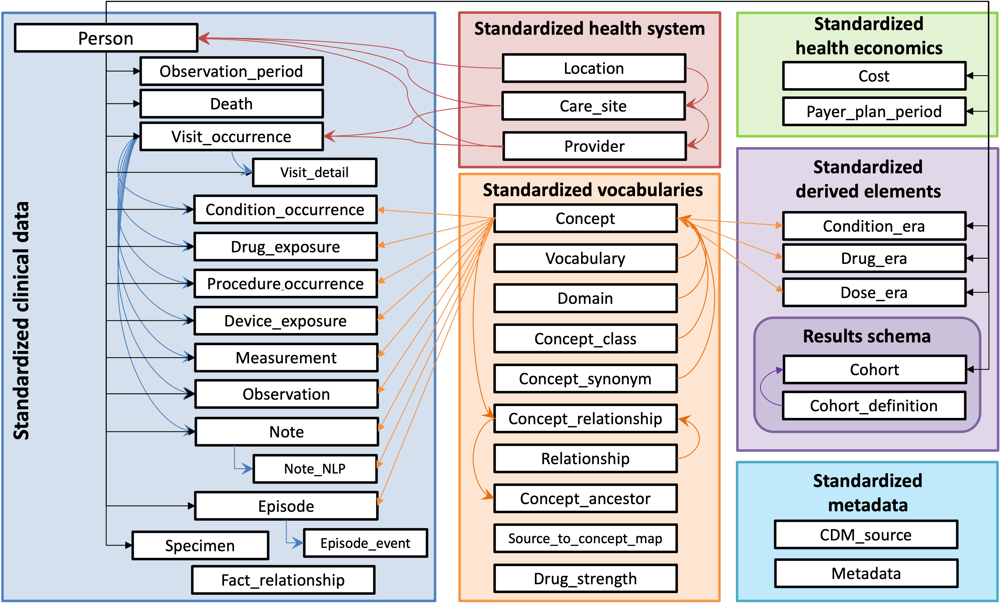

New to RWE? Start Here
These curated, freely accessible resources provide foundational knowledge, practical examples, and step-by-step instructions for navigating real world evidence:
Book
Guide to Real-World Data for Clinical Research
By Danielle Boyce (ALS TDI) and Pavel Goriacko (Montefiore)
Visit rwd.guide
Online Course
Introduction to OMOP: Your Frequently Asked Questions Answered
Taught by Danielle Boyce (ALS TDI) and Pavel Goriacko (Montefiore)
Enroll in the course
Train-the-Trainer (OHDSI/OMOP)
👉 Open the Train-the-Trainer materials
A curated, hands-on curriculum covering OMOP/CDM fundamentals, vocabularies, Atlas, and exercises.
Curated Resource Overview
OHDSI, OMOP, and FHIR for Neurodegenerative Disease Researchers
Created by Danielle Boyce (ALS TDI)
Access the resource
ALS Geospatial Hub:
The ALS Geospatial Hub brings together authoritative data from federal agencies, research institutions, and non-profit organizations, organizing it by geography. Access the resource
📚 Additional Resources to Support the STARDUSTT Framework
🔧 Git & GitHub
- GitHub Hello World Quickstart — Learn the basics of GitHub by creating your first repository.
🗄️ Relational Databases
- Microsoft Learn: Explore Relational Data Concepts — Introduction to relational databases and core concepts.
📘 Data Science Handbook
- Open, Rigorous, and Reproducible Research: A Practitioner’s Handbook — Stanford Data Science’s guide for reproducible research.
🧰 Data Management Tools & Guidance
- DMPTool — Create and manage data management plans.
- NIH Data Management & Sharing Policy — Guidance on planning and budgeting for data sharing.
💻 Programming & Data Science Resources
Core Platforms:
- Project Jupyter — Interactive computing.
- What is the Jupyter Notebook? — Beginner-friendly guide.
- NIAID NIH Informatics Resources.
Software Carpentry (free, hands-on lessons):
- Python
- R
- Databases & SQL
Additional Learning:
- DataCamp — Interactive coding lessons.
- Khan Academy: SQL Basics.
- Codecademy: Learn Python.
- Python Data Science Handbook by Jake VanderPlas.
- R for Data Science by Hadley Wickham & Garrett Grolemund.
- NIH “All of Us” Jupyter & Programming Docs.
OMOP/OHDSI
This page contains practical resources for working with Observational Health Data Science and Informatics (OHDSI) community resources and Observational Medical Outcomes Partnership (OMOP) data, including an interactive OMOP data dictionary, code snippets for common analytic tasks using a variety of software, and examples of observational research projects suited to OMOP/OHDSI frameworks. For a good overview of OHDSI/OMOP, please see the resources in the chapter, "New to RWE? Start Here."
OMOP Scavenger Hunt
In addition to the essential resources listed on "New to RWE? Start Here" page, jump-start your expertise by exploring these resources early in your OHDSI journey.
Join the Community
☐ Introduce yourself on the OHDSI Forums — “Welcome to OHDSI” thread
☐ Follow OHDSI on LinkedIn
☐ Subscribe to the OHDSI Newsletter
☐ Learn about OHDSI Workgroups
☐ Attend an OHDSI Community Call
☐ Review past & upcoming OHDSI events
☐ Join the OHDSI Microsoft Teams environment
Reading and Reference
☐ Bookmark the Book of OHDSI
☐ Bookmark NIH All of Us OMOP documentation
OMOP Training & Tutorials
☐ Enroll in the EHDEN Academy
☐ Watch OHDSI tutorials & workshops
The OMOP CDM
☐ Bookmark the OMOP Common Data Model site
☐ Read the OMOP CDM FAQ
Standardized Vocabularies
☐ Search vocabularies in Athena — look up individual concepts of interest to you
Data
☐ Download the MIMIC-IV demo OMOP dataset
Software & Tools
☐ Review OHDSI software tools
☐ Explore the Atlas Demo
📊 OMOP CDM Basic Data Dictionary
For a sample interactive OMOP data dictionary detailing the fields in the OMOP CDM, please click on the thumbnail below. For the specific ARC study data dictionary, visit the Neuromine Data Portal.
📈 Projects Best Suited for Observational Research and OHDSI Network Studies
🧪 Analytic Use Cases and Examples
| Analytic Use Case | Type | Structure | Example |
|---|---|---|---|
| Clinical Characterization | Disease Natural History | Amongst patients who are diagnosed with <insert your disease of interest>, what are the patient’s characteristics from their medical history? | Amongst patients with rheumatoid arthritis, what are their demographics (age, gender), prior conditions, medications, and health service utilization behaviors? |
| Treatment Utilization | Amongst patients who have <insert your disease of interest>, which treatments were patients exposed to amongst <list of treatments for disease> and in which sequence? | Amongst patients with depression, which treatments were patients exposed to SSRI, SNRI, TCA, bupropion, esketamine and in which sequence? | |
| Outcome Incidence | Amongst patients who are new users of <insert your drug of interest>, how many patients experienced <insert your known adverse event of interest from the drug profile> within <time horizon following exposure start>? | Amongst patients who are new users of methylphenidate, how many patients experienced psychosis within 1 year of initiating treatment? | |
| Population-level Effect Estimation | Safety Surveillance | Does exposure to <insert your drug of interest> increase the risk of experiencing <insert an adverse event> within <time horizon following exposure start>? | Does exposure to ACE inhibitor increase the risk of experiencing Angioedema within 1 month after exposure start? |
| Comparative Effectiveness | Does exposure to <insert your drug of interest> have a different risk of experiencing <insert any outcome (safety or benefit)> within <time horizon following exposure start>, relative to <insert your comparator treatment>? | Does exposure to ACE inhibitor have a different risk of experiencing acute myocardial infarction while on treatment, relative to thiazide diuretic? | |
| Patient-level Prediction | Disease Onset and Progression | For a given patient who is diagnosed with <insert your disease of interest>, what is the probability that they will go on to have <another disease or related complication> within <time horizon from diagnosis>? | For a given patient who is newly diagnosed with atrial fibrillation, what is the probability that they will go on to have ischemic stroke in next 3 years? |
| Treatment Response | For a given patient who is a new user of <insert your chronically-used drug of interest>, what is the probability that they will <insert desired effect> in <time window>? | For a given patient with T2DM who starts on metformin, what is the probability that they will maintain HbA1C <6.5% after 3 years? | |
| Treatment Safety | For a given patient who is a new user of <insert your drug of interest>, what is the probability that they will experience <insert adverse event> within <time horizon following exposure>? | For a given patient who is a new user of warfarin, what is the probability that they will have GI bleed in 1 year? |
Source: OHDSI. (2023). Save Our Sisyphus Challenge Slides (PDF)
🧭 Current CDM

Source: OHDSI Common Data Model
- 🔗 Interactive (Select) OMOP Data Dictionary
https://github.com/DBJHU/DBJHU.github.io/blob/main/SelectOMOPDataDictionaryInteractivev2.html
🗂️ Commonly Used CDM Tables Overview
The OMOP common data model (CDM) is a relational database made up of different tables that relate to each other by foreign keys (XXXX_ID values; e.g., PERSON_ID or PROVIDER_ID). The OMOP tables in your data export are as follows:
| Table | Description |
|---|---|
| Person | Contains basic demographic information describing a participant, including biological sex, birth date, race, and ethnicity. |
| Visit_occurrence | Captures encounters with healthcare providers or similar events. Contains the type of visit a person has (outpatient care, inpatient care, or long-term care), as well as the date and duration information. Rows in other tables can reference this table, for example, condition_occurrences related to a specific visit. |
| Condition_occurrence | Indicates the presence of a disease or medical condition stated as a diagnosis, a sign, or symptom, which is either observed by a provider or reported by the patient. |
| Drug_exposure | Captures records about the utilization of a medication. Drug exposures include prescription and over-the-counter medicines, vaccines, and large-molecule biologic therapies. Radiological devices ingested or applied locally do not count as drugs. Drug exposure is inferred from clinical events associated with orders, prescriptions written, pharmacy dispensing, procedural administrations, and other patient-reported information. |
| Measurement | Contains both orders and results of a systematic and standardized examination or testing of a participant or participant's sample, including laboratory tests, vital signs, quantitative findings from pathology reports, etc. |
| Procedure_occurrence | Contains records of activities or processes ordered by or carried out by a healthcare provider on the patient to have a diagnostic or therapeutic purpose. |
| Observation | Captures clinical facts about a person obtained in the context of an examination, questioning, or a procedure. Any data that cannot be represented by another domain, such as social and lifestyle facts, medical history, and family history, are recorded here. |
| Device_exposure | Captures information about a person's exposure to a foreign physical object or instrument which is used for diagnostic or therapeutic purposes. Devices include implantable objects, blood transfusions, medical equipment and supplies, other instruments used in medical procedures, and material used in clinical care. |
| Death | Contains the clinical events surrounding how and when a participant dies. |
✅ OMOP Data Quality
- The Book of OHDSI — Chapter 15: Data Quality
- Kahn et al. (2016): A Harmonized Data Quality Assessment Terminology and Framework
🔧 ETL Basics
- PDF: https://www.ohdsi.org/wp-content/uploads/2019/09/OMOP-Common-Data-Model-Extract-Transform-Load.pdf
- Book: https://ohdsi.github.io/TheBookOfOhdsi/ExtractTransformLoad.html
🛠️ ETL Steps
- Dataset profiling and documentation
- Create data model documentation, sample data, data dictionaries, code lists, and other relevant information (23-Aug)
- Execute database profiling scan (WhiteRabbit) on source database
-
Prepare mapping approach/documents based on scan reports from database profiling scan
-
Generation of the ETL Design
- Mapping workshop with all relevant parties to:
- Understand the source
- Define the scope of source data to be transformed
- Define acceptance criteria for OMOP output
Output: draft mapping document
-
Finalize mapping document:
- Integrate all notes/documentation from workshop
- Work through mappings and verify, update, fill in gaps
- Meetings/emails with data contact/technical contact (TC) as needed
-
Source Data Integrations and Semantic Mapping
- Source Code mapping:
- Identify which codes are already mapped to standard vocabulary
- Identify code types for codes that need to be mapped
- Translation of code description/phrases to English, if/as needed
- Create proposed code mappings
- Generate mappings for data coming out of flowsheets (together with consortium)
- Review/approval of code mappings (often by medical experts with the Data Owner)
- Identify imaging & waveform data; map using consortium-defined guidelines
-
Use OHNLP to extract OMOP data from unstructured sources
-
Technical architecture design
- CI/CD strategy & version control
-
OHDSI ecosystem needs & infrastructure design
-
Technical ETL Development
- Implement ETL (preferred language/structure)
-
Update ETL based on testing/QA/feedback (8, 9)
-
Setting up Infrastructure
-
Deploy core servers and services based on (4)
-
Install OHDSI tools
-
Database server, Achilles/DQD/Ares, Atlas/WebAPI, RStudio Server, HADES, notebooks & other site-specific tools
-
ETL Testing and Validation
- Test ETL on sample/dev data, then DO data
- Verify & document QA
- Submit Achilles/DQD/AresIndexer results regularly
-
Plan & manage ETL development
-
Data Quality Assessment
- QA/Acceptance testing for mapping accuracy & completeness
-
Review & approval by Data Owner
-
Documentation
- Mapping Documentation, Themis checks, and technical/transform documentation
-
Project Management Throughout
- Organize tasks, milestones, and follow-up
🧪 OHDSI Analysis Tools
R, SQL, Python, or any preferred data analysis software.
Reference: The Book of OHDSI — Chapter 9: SQL and R
📘 Data Science Handbook
Open, rigorous and reproducible research: A practitioner’s handbook — Stanford Data Science
🧰 Data Management Tools & Resources
- DMP Tool: https://dmptool.org/
- NIH DMS Policy Planning: https://sharing.nih.gov/data-management-and-sharing-policy/planning-and-budgeting-for-data-management-and-sharing/writing-a-data-management-and-sharing-plan#after
💻 Programming Resources (Jupyter, Python, SQL, R)
Software Carpentry (free lessons): - Programming with Python - Programming with R - Databases and SQL
Additional resources:
- DataCamp
- Khan Academy — SQL Basics
- Codecademy — Learn Python 2
- Python Data Science Handbook
- R for Data Science
- NIH “All of Us” documentation:
Jupyter & programming
🌐 OHDSI Resources
- OHDSI Forums — Introduce yourself on the “Welcome to OHDSI” thread!
- The Book of OHDSI
- OMOP CDM FAQ
- OHDSI Microsoft Teams
- MIMIC-IV demo OMOP dataset
- EHDEN Academy
- Atlas Demo and Athena
- OHDSI YouTube: tutorials & workshops
- OHDSI Community Dashboard
- OMOP Common Data Model (docs)
- Learn GitHub
- Community Calls and Workgroups
- Follow OHDSI: Twitter • LinkedIn
- Subscribe to the OHDSI Newsletter
- OHDSI software
- NIH All of Us — OMOP documentation
⭐ Special Topic: Clinical Registries Using OHDSI

💻 OMOP Code Snippets
We provide a publicly available set of OMOP code snippets used in the I-LEARN Course to help learners explore and analyze OMOP Common Data Model datasets using tools like R, SQL, and Python.
🔗 Repository: BoyceLab/OMOP-Code-Snippets-for-I-LEARN-Course
🧰 What You'll Find in this Repository
The repository contains example scripts and templates to:
- Query OMOP data using SQL
- Analyze OMOP-mapped data using R
- Connect and run queries via RPostgreSQL
- Explore how standard concepts relate to source codes
📂 Folder Highlights
- SQL/: Ready-to-use SQL queries for common OMOP domains (e.g., drug exposure, observation).
- R/: R scripts that demonstrate how to load, analyze, and visualize OMOP data.
- concepts/: Examples for working with concept_id and concept_relationship tables.
📘 Use Cases
These snippets are designed for: - Learners in the Tufts CTSI I-LEARN course - Researchers new to OHDSI/OMOP - Analysts working with OMOP-formatted ALS datasets